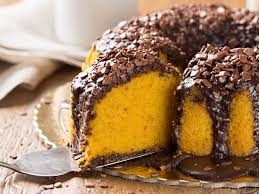
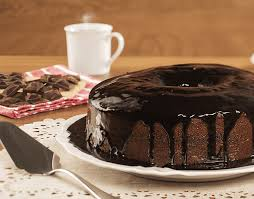
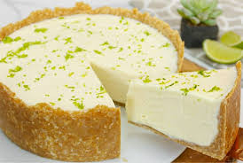
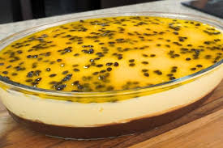

Receita de Bolo de Cenoura
Ingredientes:
- 3 cenouras médias raladas
- 4 ovos
- 1 xícara de óleo
- 2 xícaras de açúcar
- 2 xícaras de farinha de trigo
- 1 colher de fermento em pó
Modo de Preparo:
- Em um liquidificador, bata as cenouras, os ovos e o óleo.
- Acrescente o açúcar e bata por mais alguns minutos.
- Despeje a mistura em uma tigela e adicione a farinha de trigo e o fermento.
- Misture bem e despeje em uma forma untada.
- Leve ao forno médio por 40 minutos.
Receita de Pão de Queijo

Ingredientes:
- 1 xícara de leite
- 1/2 xícara de óleo
- 3 ovos
- 3 xícaras de polvilho doce
- 1 xícara de queijo ralado
- Sal a gosto
Modo de Preparo:
- Em uma panela, ferva o leite e o óleo.
- Em uma tigela, misture o polvilho e o queijo ralado.
- Adicione o leite e o óleo fervidos e misture bem.
- Acrescente os ovos e o sal e misture até obter uma massa homogênea.
- Modele os pães de queijo e leve ao forno médio por 30 minutos.
Receita de Brigadeiro
Ingredientes:
- 1 lata de leite condensado
- 1 colher de sopa de manteiga
- 7 colheres de sopa de achocolatado em pó
- Chocolate granulado
Modo de Preparo:
- Em uma panela, misture o leite condensado, a manteiga e o achocolatado.
- Leve ao fogo baixo e mexa até desgrudar do fundo da panela.
- Despeje em um prato untado e deixe esfriar.
- Modele os brigadeiros e passe no chocolate granulado.
Receita de Bolo de Chocolate
Ingredientes:
- 3 ovos
- 2 xícaras de açúcar
- 3 xícaras de farinha de trigo
- 1 xícara de chocolate em pó
- 1 xícara de óleo
- 1 xícara de água quente
- 1 colher de fermento em pó
- 1 lata de leite condensado
- 1 colher de manteiga
- 7 colheres de achocolatado em pó
- Chocolate granulado
Modo de Preparo:
- Em uma tigela, misture os ovos, o açúcar, a farinha, o chocolate em pó, o óleo e a água.
- Adicione o fermento e misture bem.
- Despeje em uma forma untada e leve ao forno médio por 40 minutos.
- Em uma panela, misture o leite condensado, a manteiga e o achocolatado.
- Leve ao fogo baixo e mexa até desgrudar do fundo da panela.
- Despeje sobre o bolo e decore com chocolate granulado.
Receita de Bolinho de Chuva
Ingredientes:
- 2 ovos
- 1 xícara de açúcar
- 1 xícara de leite
- 2 xícaras de farinha de trigo
- 1 colher de fermento em pó
- 1 pitada de sal
- Óleo para fritar
- Açúcar e canela para polvilhar
Modo de Preparo:
- Em uma tigela, misture os ovos, o açúcar e o leite.
- Adicione a farinha, o fermento e o sal e misture bem.
- Com a ajuda de duas colheres, modele os bolinhos e frite em óleo quente.
- Escorra em papel toalha e polvilhe açúcar e canela.
Receita de Torta de Limão
Ingredientes:
- 1 pacote de biscoito maisena
- 100g de manteiga derretida
- 1 lata de leite condensado
- 1 lata de creme de leite
- 1/2 xícara de suco de limão
- Raspas de limão para decorar
Modo de Preparo:
- Triture os biscoitos e misture com a manteiga até formar uma massa.
- Forre uma forma com a massa e leve ao forno por 10 minutos.
- Misture o leite condensado, o creme de leite e o suco de limão.
- Despeje o creme sobre a massa e leve à geladeira por 2 horas.
- Decore com raspas de limão antes de servir.
Receita de Panqueca Americana
Ingredientes:
- 1 xícara de farinha de trigo
- 2 colheres de sopa de açúcar
- 1 colher de chá de fermento em pó
- 1/2 colher de chá de sal
- 1 xícara de leite
- 1 ovo
- 2 colheres de sopa de manteiga derretida
Modo de Preparo:
- Em uma tigela, misture a farinha, o açúcar, o fermento e o sal.
- Adicione o leite, o ovo e a manteiga derretida e misture até obter uma massa homogênea.
- Aqueça uma frigideira antiaderente e despeje pequenas porções da massa.
- Cozinhe até formar bolhas na superfície e vire para dourar o outro lado.
- Sirva com mel, manteiga ou frutas.
Receita de Mousse de Maracujá
Ingredientes:
- 1 lata de leite condensado
- 1 lata de creme de leite
- 1 xícara de suco de maracujá concentrado
- Sementes de maracujá para decorar
Modo de Preparo:
- No liquidificador, bata o leite condensado, o creme de leite e o suco de maracujá até obter uma mistura cremosa.
- Despeje em taças individuais ou em uma travessa.
- Leve à geladeira por pelo menos 2 horas.
- Decore com sementes de maracujá antes de servir.